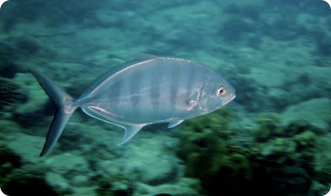
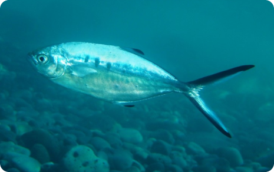

Carangue
La carangue est un prédateur, connue pour chasser individuellement et en bancs. L'espèce se nourrit de divers poissons , ainsi que les crustacés , les céphalopodes et les mollusques.
Régime
Carnivore
Sociabilité
Solitaire
Territorialité
Non
Rythme Biologique
Diurne
Taille Max
90
Taille Min
110

Palomine
Ce poisson est unicolore avec un corps majoritairement argent. Il possède également des rayures verticales de couleur noir.

Tachetée
Ce poisson est unicolore avec un corps majoritairement argent. Il possède également des rayures verticales de couleur noir.